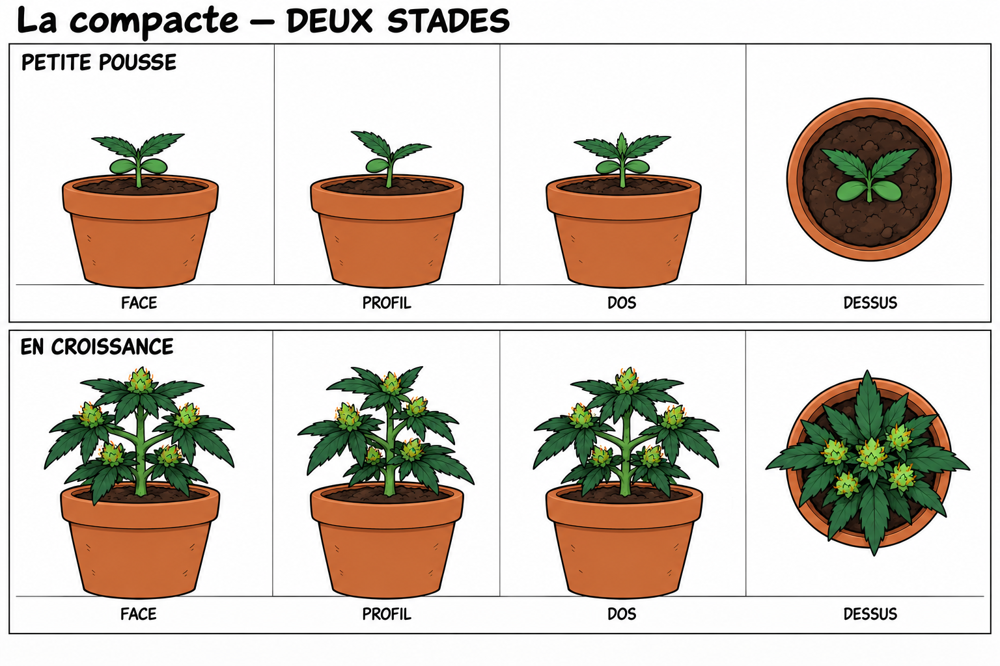
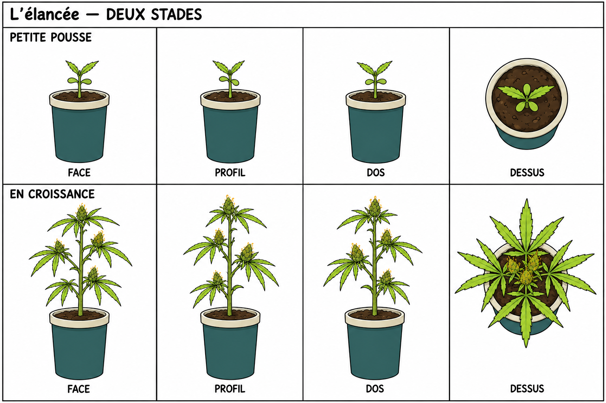
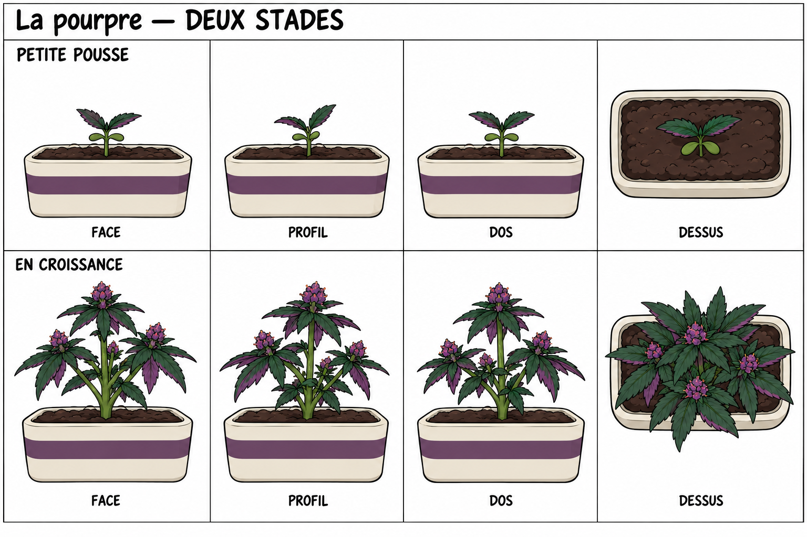
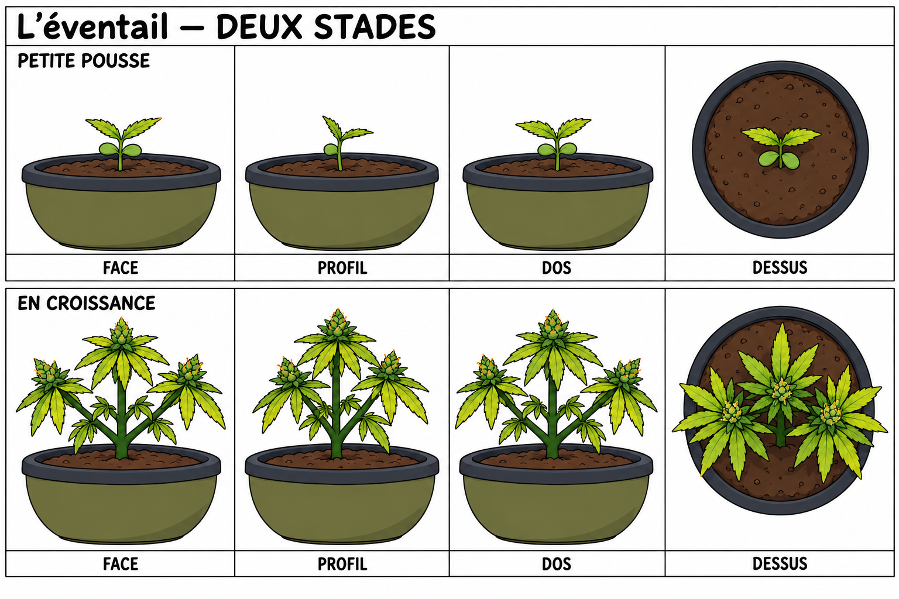
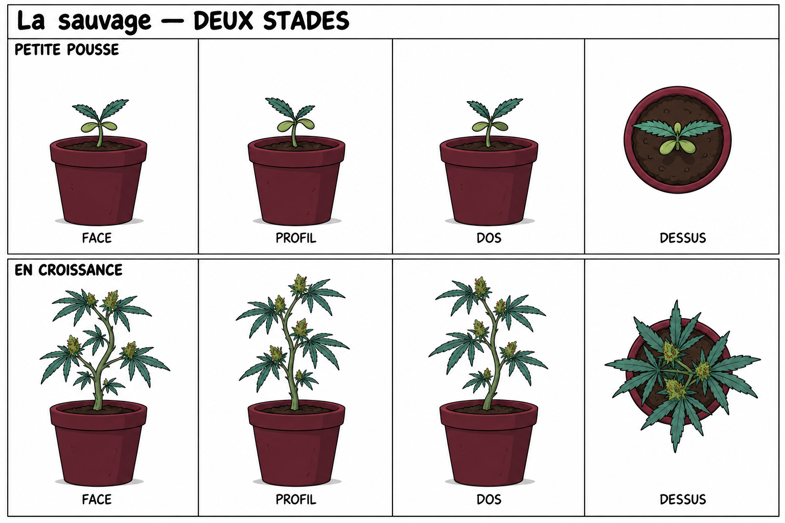
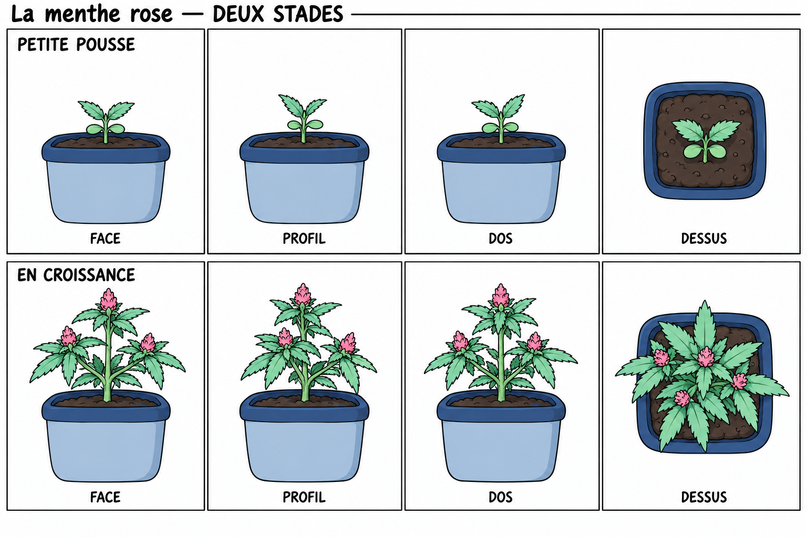

Planches de référence générées avec imagegen : petite pousse et stade en croissance avec petites feuilles et mini-têtes. Chaque planche présente face, profil, dos et dessus. Il s’agit de concepts dessinés pour les futurs modèles 3D.





